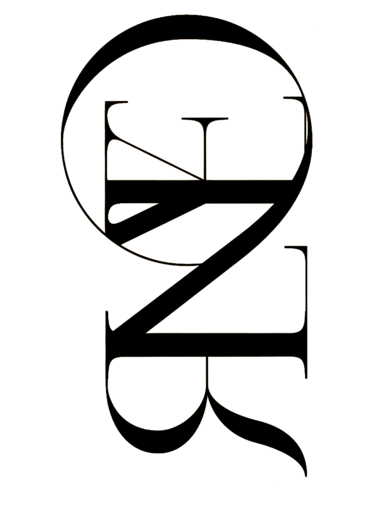
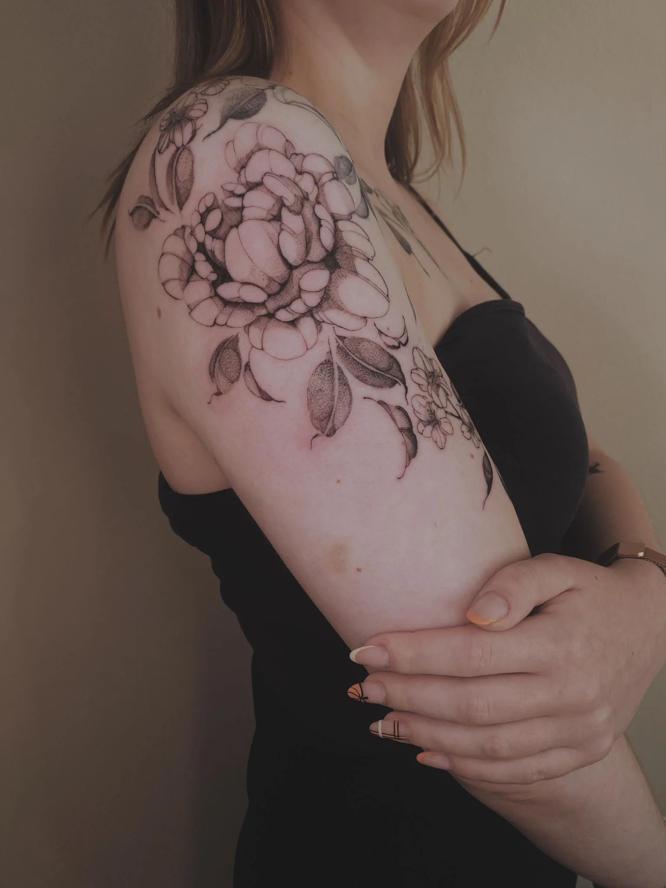
Het zachtere werk
Fijne, botanische tattoos die ik voor jou teken, op maat van je lichaam. Daarnaast ook piercings en brows.
Uit de natuur getekend
Bloemen, vogels, vlinders. Elk stuk is een eigen ontwerp, dus hetzelfde zal je nooit bij een ander zien.
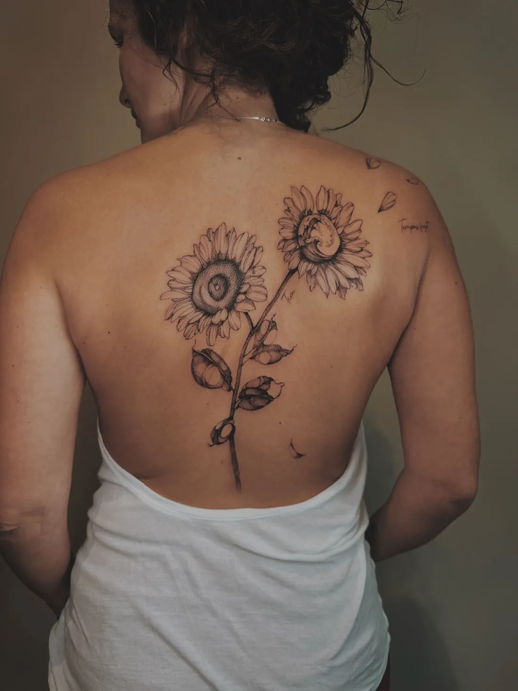
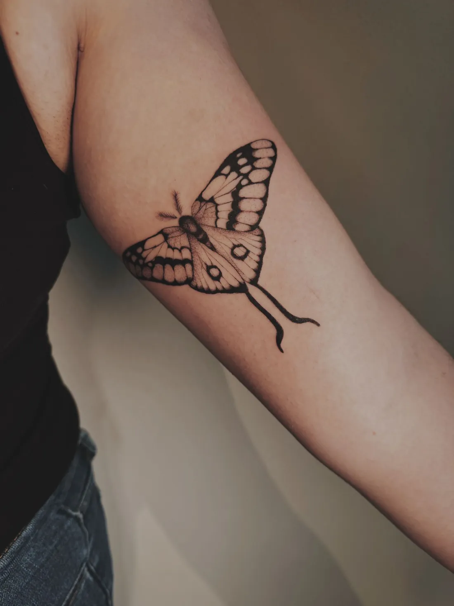
Ik opteer vooral voor thema's die met de natuur te maken hebben. Ik streef elegantie na.
Lye Noir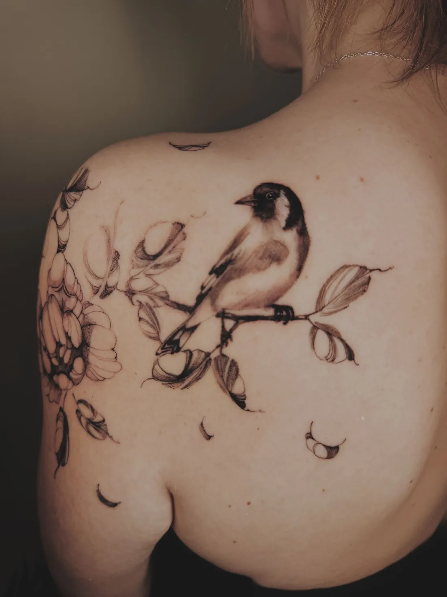
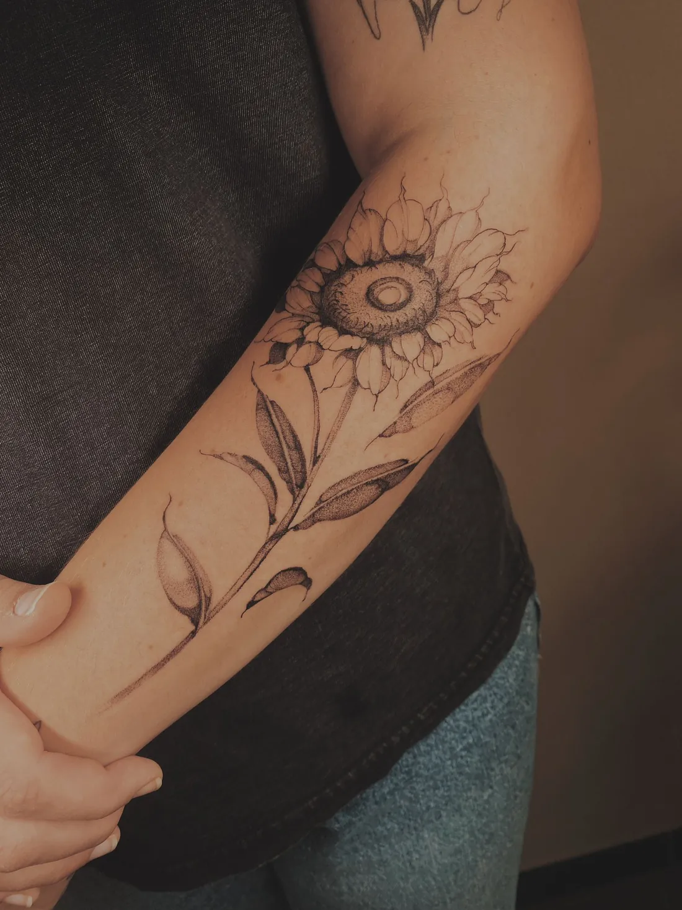
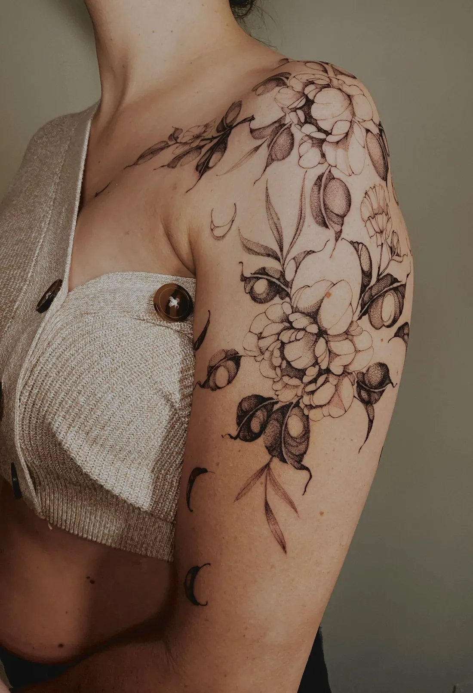
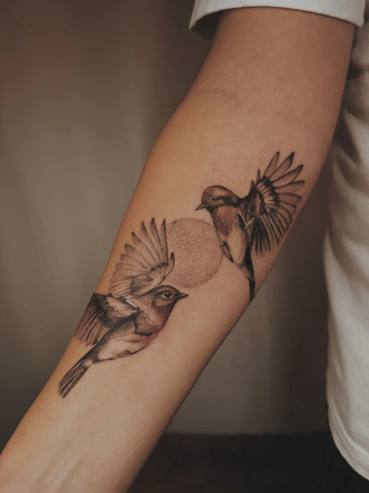
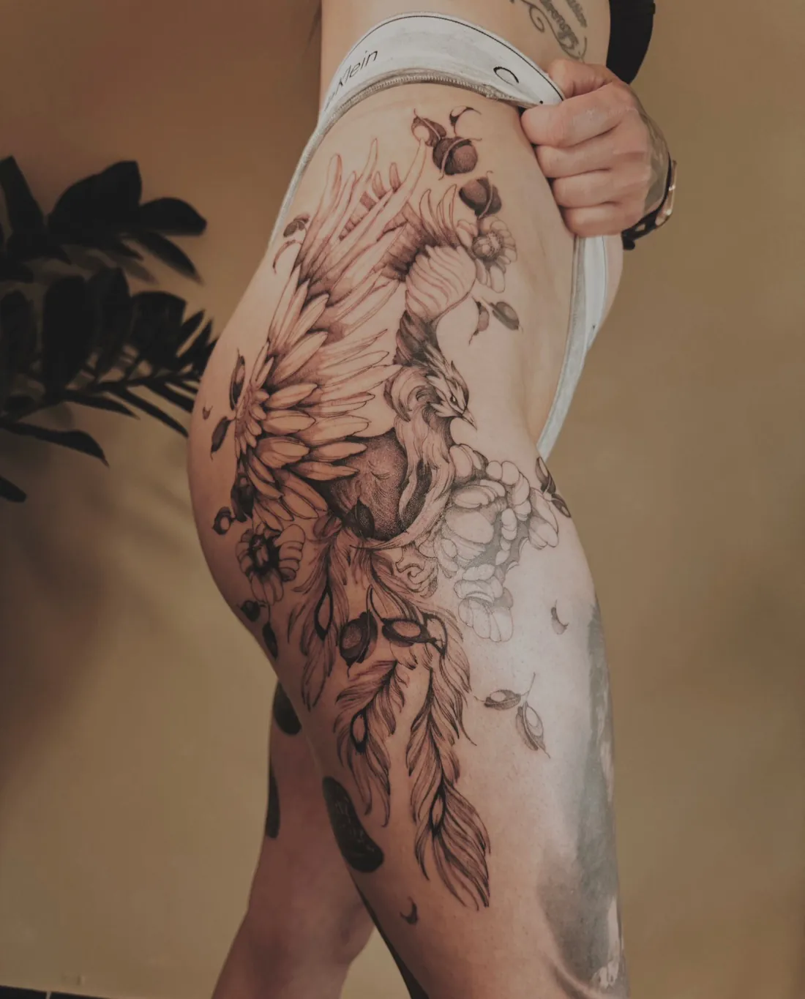
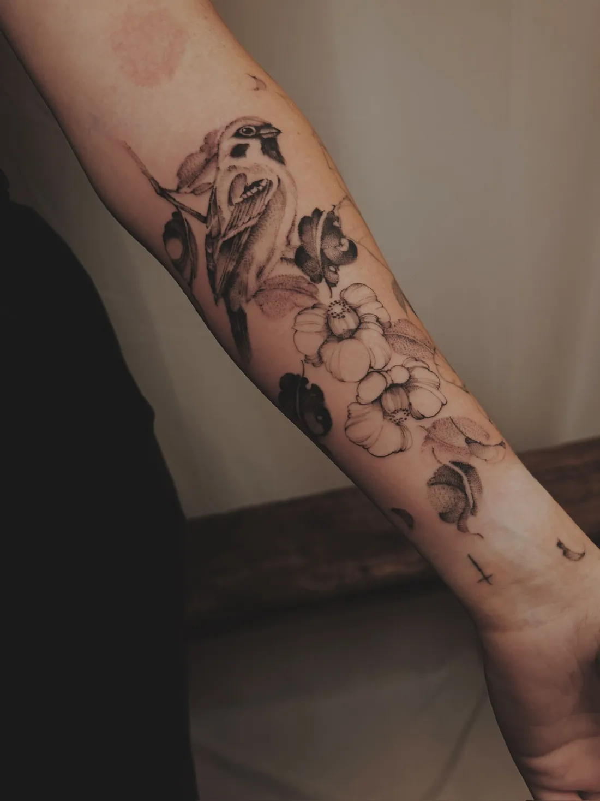
behalve op vingers, handen en voeten
Zo komt jouw tattoo tot stand
- 01
Je vertelt je idee
Ik neem de tijd om te luisteren en geef graag mijn eerlijke mening over plaats en grootte.
- 02
Je boekt met een voorschot
Dat bedrag gaat gewoon af van de totaalprijs. Instructies krijg je per mail.
- 03
De dag ervoor teken ik het
Op je afspraak bekijken we het ontwerp samen en passen we aan tot het klopt.
- 04
Zetten en verzorgen
Fijn en rustig gezet. Betalen kan met bancontact of cash.
Tatoeëren doe ik pas vanaf 18 jaar. Ook met toestemming van je ouders maak ik daar geen uitzondering op.
Piercing & brows
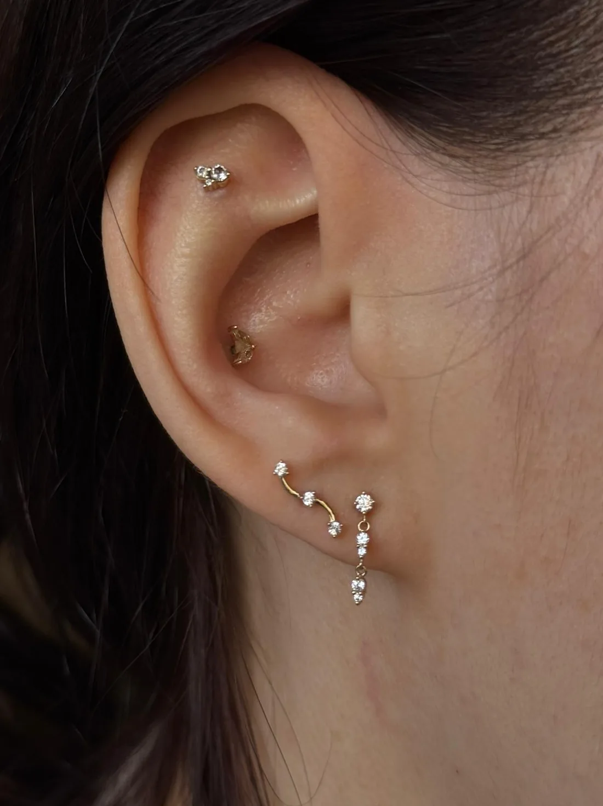
Fijn en eerlijk geprijsd
Prijzen zonder juweel. Je kiest je juweeltje in de shop.
- Oorlel€ 30
- Oorlel, paar€ 50
- Helix, tragus, conch, daithook flat, rook en anti tragus€ 35
- Industrial of verticale tragus€ 45
- Neus, septum, navel€ 35
Controle en eerste downsize zijn gratis als ik je piercing zette.
Wenkbrauwen die blijven
Telkens met een touch-up na 4 tot 10 weken.
- Nano Browstouch-up € 100€ 350
- Combo Browstouch-up € 95€ 300
- Soft Ombre / Powder Browstouch-up € 85€ 270
Twijfel je welke techniek bij je past? Vraag het gerust bij je afspraak.
Boek je browsWat ze erover zeggen
uit 75 reviews op Google
Gewoon WAUW! Na een gesprek met Kimberly, creëerde zij een prachtig ontwerp waar het gevoel ook volledig juist in zat. Kimberly stelt je volledig op je gemak en neemt haar tijd om je tattoo vakkundig te plaatsen.
Ik heb hier mijn 1e tattoo laten zetten. Ze snapte direct de visie waar ik voor ging.
Ze maakt ook altijd haar eigen ontwerpen van wat je wilt, wat je tattoo nog zoveel meer uniek maakt!
Ik heb ondertussen al 4 tattoos van haar en echt super tevreden! Ook allemaal geplaatst zoals gevraagd en heel fijn gezet.
Tattoo nummer 14 staat erop, allemaal van Kimberly, maar het is zeker niet de laatste.
Tot in Torhout
Je vindt de studio in de Aartrijkestraat 3, in de blauwe zone. Een afspraak plan je zelf online, met een vraag kan je me altijd een berichtje sturen.
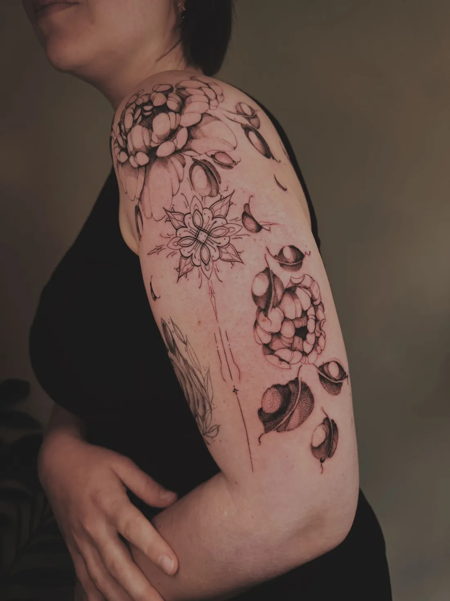
Openingsuren
- Maandaggesloten
- Dinsdag tot zaterdag10u tot 18u
- Zondaggesloten